Centelha
Uma marca que transforma luz em acesso: serena, acolhedora e legível em qualquer escala, do ícone de 24 px à experiência completa de audiolivros.
Essência: acender conhecimento com serenidade, tornando obras espíritas acessíveis pela escuta e pela leitura acompanhada.
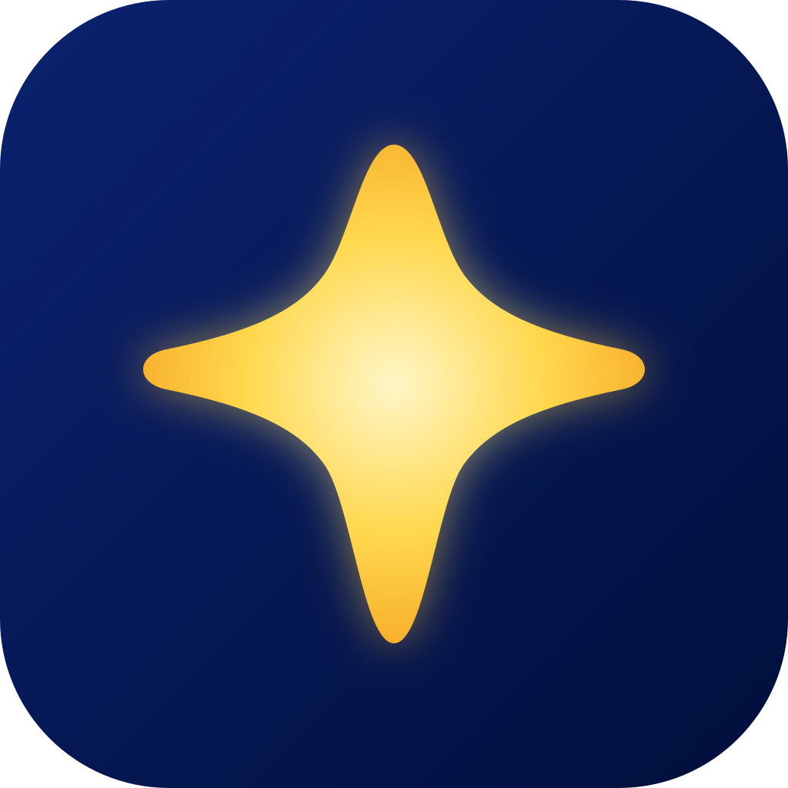
Essência, valores e voz
Claridade
Explicar, orientar e organizar sem jargão desnecessário. A luz é metáfora de compreensão, não de mistério.
Acolhimento
Uma experiência calma, sem urgência artificial, culpa ou pressão. O usuário controla ritmo, duração e profundidade.
Evolução
Valorizar continuidade e aprendizado progressivo. Pequenos avanços importam — uma escuta, um capítulo, uma pergunta.
Como falar
- Sereno, direto e humano.
- Convidativo: “Continue de onde parou.”
- Orientado à autonomia: “Escolha a velocidade que fica mais confortável.”
- Kids: simples e positivo — “Quer tentar mais uma vez com a Clara?”
Como não falar
- Não dogmático: evitar “esta é a única verdade”.
- Não místico: evitar “eleve sua vibração” como linguagem funcional do produto.
- Não punitivo: evitar “você errou”. Preferir “vamos tentar de outro jeito”.
- Não infantilizar a experiência adulta.
Arquitetura de nome
Centelha é a marca principal. Centelha Jovem e Centelha Kids são extensões editoriais: mantêm o mesmo símbolo e acrescentam o descritor na interface, sem criar um novo emblema.
Sistema de assinatura
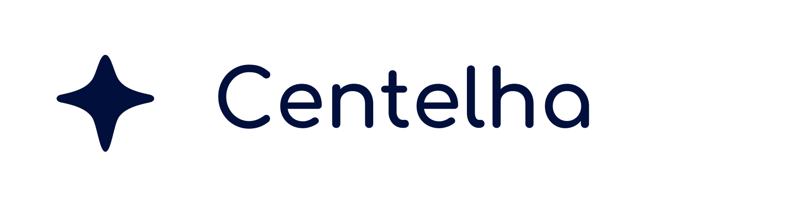
Construção
O símbolo é uma estrela de quatro pontas, com laterais côncavas, terminações arredondadas e eixo vertical discretamente mais longo. A versão colorida usa gradiente radial creme → dourado → âmbar, com halo difuso.
- Unidade x
- largura visual da ponta horizontal; no master 1024, adotar x ≈ 64 unidades.
- Área de proteção
- mínimo 1× em todos os lados; 1,25× na assinatura empilhada.
- Símbolo mínimo
- 24 px digital / 7 mm impresso.
- Horizontal mínimo
- 120 px digital / 32 mm impresso.
- Empilhado mínimo
- 72 px digital / 20 mm impresso.
- Brilho
- usar acima de 48 px; abaixo disso, preferir
symbol-flat.svg.
Usos proibidos
- Não esticar ou comprimir.
- Não girar a centelha.
- Não trocar o gradiente por cores aleatórias.
- Não adicionar contorno.
- Não aplicar sombra dura ou glow neon.
- Não usar sobre fotografia/padrão de baixo contraste sem placa de proteção.
- Não alterar a relação entre símbolo e palavra.
Os SVGs incluídos são uma reconstrução vetorial limpa a partir das três referências raster fornecidas. A geometria foi sistematizada sem alterar o conceito; recomenda-se usar estes arquivos como master após a aprovação visual final.
Master, plataformas e extensões
Centelha
Master 1024×1024 full bleed; o preview arredondado existe só para visualização. iOS/Android aplicam máscaras de sistema.
Centelha Jovem
Mesmo símbolo; fundo índigo/lilás como diferenciação editorial, mantendo dourado como elo da família.
Centelha Kids
Mesmo símbolo; azul mais aberto, brilho mais vivo e apoio pêssego. Sem inserir rosto no ícone principal.
App Store / iOS
Master 1024×1024. Para pipeline manual: 20 pt @2x/3x (40/60), 29 pt (58/87), 40 pt (80/120), 60 pt (120/180), iPad 76 (76/152), 83,5 pt @2x (167), marketing 1024. Prefira Asset Catalog do Xcode.
Google Play / Android
Play Store 512×512. Legacy: 48/72/96/144/192 px. Adaptive icon: camadas independentes em 108×108 dp, mantendo o símbolo dentro da zona segura central de 66×66 dp. O pacote inclui background, foreground e monochrome para Android 13+.
Também incluídos: favicon.svg, favicon-32.png, imagem social 1200×630 e PNGs 1024/512.
Paleta refinada
Azul-noite
#000F3BRGB 0, 15, 59Fundo principal
#06184DRGB 6, 24, 77Superfície escura
#0B2270RGB 11, 34, 112Superfície elevada / ícone
#12368DRGB 18, 54, 141Apoio
#2352A5RGB 35, 82, 165Apoio
#3D6BB7RGB 61, 107, 183Apoio
Centelha
#FFF6C8RGB 255, 246, 200Centro do gradiente
#FFD84DRGB 255, 216, 77Destaque principal
#F5A524RGB 245, 165, 36Pontas do gradiente
#8A5A00RGB 138, 90, 0Ações/texto em tema claro
#FBF5E6RGB 251, 245, 230Texto claro
#F6C9ADRGB 246, 201, 173Apoio Kids
#9B8CFFRGB 155, 140, 255Apoio Jovem
Neutros
#FFFDF8RGB 255, 253, 248Fundo claro
#FBF8F1RGB 251, 248, 241Superfície
#EEE9DFRGB 238, 233, 223Divisores leves
#DCD5C9RGB 220, 213, 201Texto secundário escuro
#BBB5ABRGB 187, 181, 171Ícones inativos
#918C84RGB 145, 140, 132Placeholder
#6C6862RGB 108, 104, 98Texto auxiliar
#4B4947RGB 75, 73, 71Texto secundário claro
#292C33RGB 41, 44, 51Superfície intensa
#151B28RGB 21, 27, 40Texto quase preto
Estados
#2D7A66RGB 45, 122, 102Sucesso
#A76200RGB 167, 98, 0Aviso
#B64750RGB 182, 71, 80Erro
#2D67B0RGB 45, 103, 176Informação
Tokens semânticos
Dark — padrão
background #000F3B surface #06184D surface-elevated #0B2270 text-primary #FBF5E6 text-secondary #DCD5C9 border #26417D accent #FFD84D accent-text #000F3B focus #FFF6C8
Light
background #FFFDF8 surface #FFFFFF surface-elevated #F7F2E7 text-primary #000F3B text-secondary #4B4947 border #DCD5C9 accent #8A5A00 accent-text #FFFFFF focus #D99A00
Contraste WCAG
| Tema | Par | Texto | Fundo | Contraste | Resultado |
|---|---|---|---|---|---|
| Escuro | text-primary / background | #FBF5E6 | #000F3B | 17.06:1 | AAA |
| Escuro | text-secondary / background | #DCD5C9 | #000F3B | 12.73:1 | AAA |
| Escuro | text-primary / surface | #FBF5E6 | #06184D | 15.50:1 | AAA |
| Escuro | text-secondary / surface | #DCD5C9 | #06184D | 11.56:1 | AAA |
| Escuro | text-primary / surface-elevated | #FBF5E6 | #0B2270 | 13.07:1 | AAA |
| Escuro | text-secondary / surface-elevated | #DCD5C9 | #0B2270 | 9.75:1 | AAA |
| Escuro | accent-text / accent | #000F3B | #FFD84D | 13.42:1 | AAA |
| Claro | text-primary / background | #000F3B | #FFFDF8 | 18.26:1 | AAA |
| Claro | text-secondary / background | #4B4947 | #FFFDF8 | 8.82:1 | AAA |
| Claro | text-primary / surface | #000F3B | #FFFFFF | 18.56:1 | AAA |
| Claro | text-secondary / surface | #4B4947 | #FFFFFF | 8.96:1 | AAA |
| Claro | accent-text / accent | #FFFFFF | #8A5A00 | 5.93:1 | AA |
| Atenção | dourado-claro / creme (não usar como texto) | #FFD84D | #FBF5E6 | 1.27:1 | REPROVA |
| Alternativa | dourado-escuro / creme | #8A5A00 | #FBF5E6 | 5.45:1 | AA |
O dourado claro #FFD84D sobre creme #FBF5E6 tem contraste insuficiente para texto. Em tema claro, use #8A5A00 para texto/CTA dourado, ou use texto azul-noite sobre superfícies douradas.
Voz visual arredondada, leitura longa confortável
Display / títulos — Comfortaa
Google Fonts. É geométrica, arredondada e mantém proximidade com o wordmark reconstruído. Pesos 600–700 em títulos. Não substituir o wordmark vetorial por texto digitado.
Corpo — Atkinson Hyperlegible
Google Fonts. Prioriza distinção de caracteres e conforto em leitura acompanhada. Fallback: Noto Sans.
Escala mobile
| Token | Tamanho | Peso | Entrelinha | Uso |
|---|---|---|---|---|
| Display | 40 | 700 | 48 | Hero / onboarding |
| Title 1 | 32 | 700 | 40 | Telas principais |
| Title 2 | 24 | 700 | 32 | Seções |
| Title 3 | 20 | 600 | 28 | Cards |
| Body L | 18 | 400 | 28 | Leitura acompanhada |
| Body | 16 | 400 | 24 | Interface |
| Body S | 14 | 400/700 | 20 | Metadados |
| Caption | 12 | 400/700 | 16 | Labels |
Luz, ritmo e suavidade
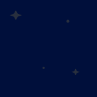
Padrão escuro
Tile 160×160 sem emenda. Opacidade baixa para não competir com conteúdo.
Padrão claro
Pontos e pequenas centelhas em azul com 8% de opacidade.
Ícones de interface
24×24, traço 1,8 px, terminações e encontros arredondados, sem preenchimentos pesados. O conjunto evita metáforas místicas e mantém leitura rápida.
Geometria UI
Raios: 8 / 12 / 20 / 28 / pill Spacing: 4 / 8 / 12 / 16 / 20 / 24 / 32 / 40 / 48 / 64 px Ícones: 16 / 24 / 32 px
Efeitos
shadow-1: 0 4 16 rgba(0,15,59,.12) shadow-2: 0 12 36 rgba(0,15,59,.22) spark-glow: 0 0 28 rgba(255,216,77,.45)
Glow só na centelha ou em feedbacks positivos. Nunca usar como “neon” em textos inteiros.
Interface e comunicação
Tema escuro
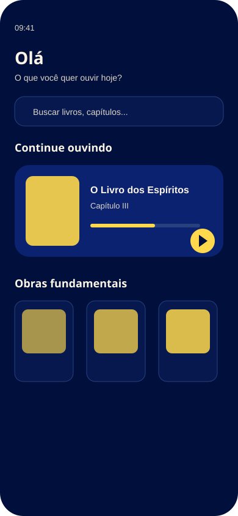
Início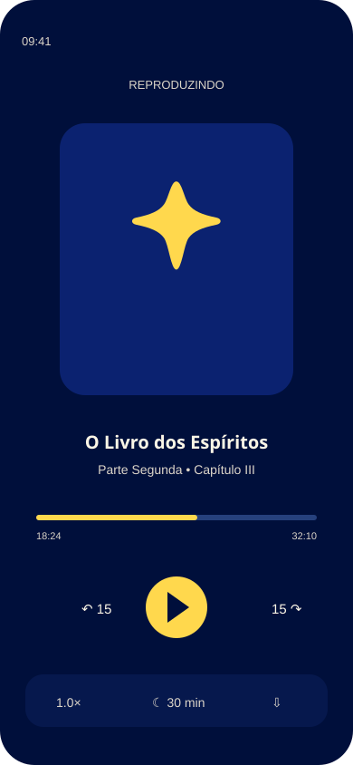
Player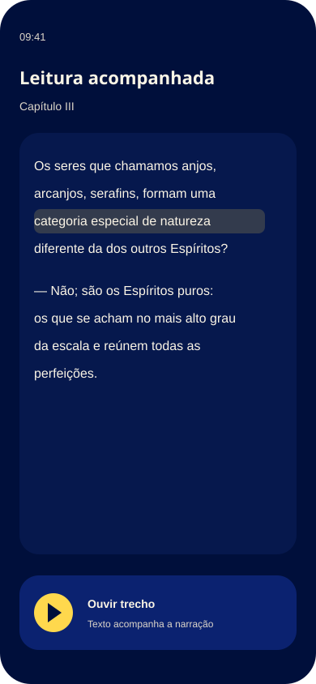
Leitura acompanhadaTema claro
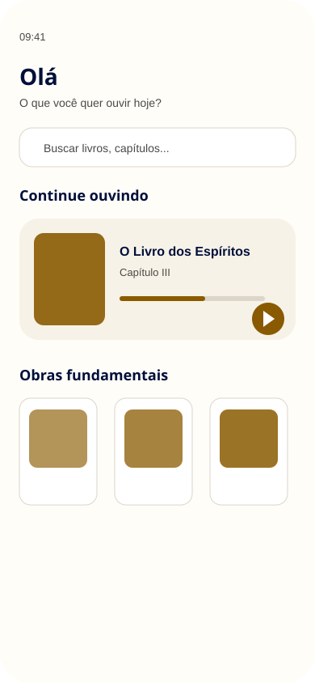
Início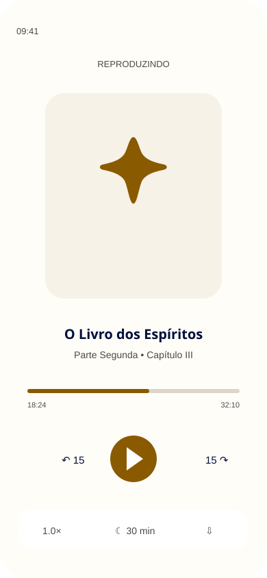
Player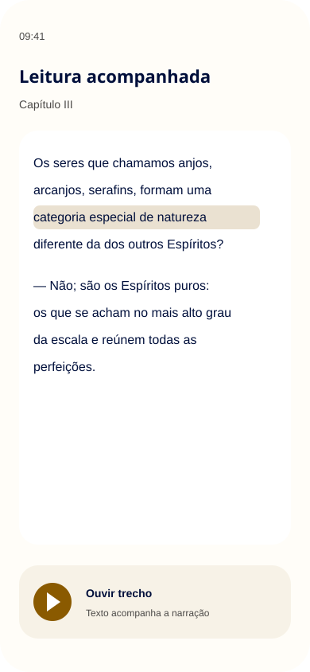
Leitura acompanhadaSocial
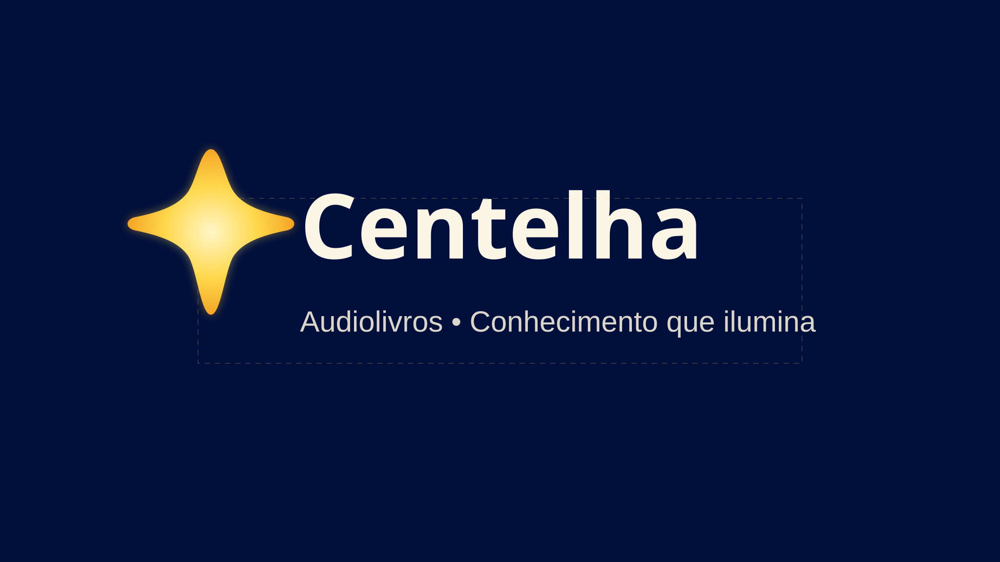
YouTube 2560×1440 • safe zone 1546×423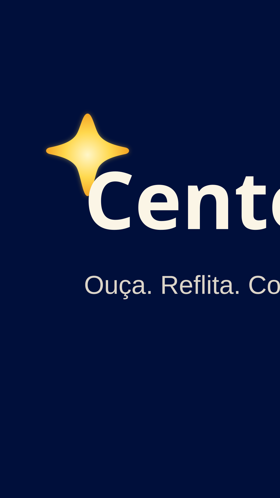
Shorts 1080×1920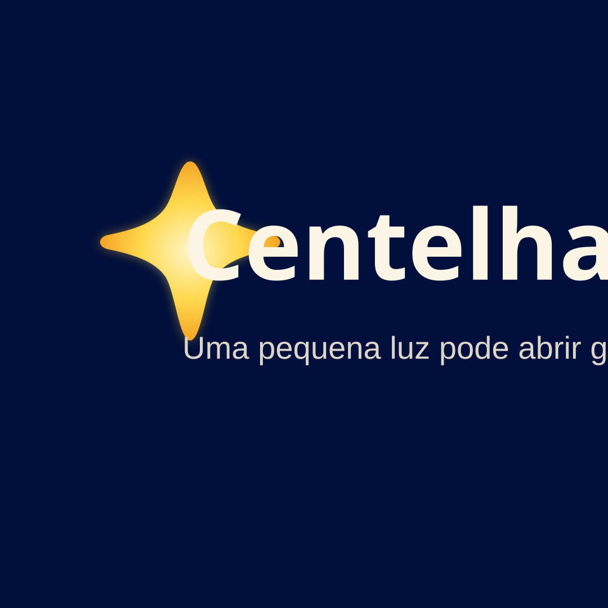
Post 1080×1080Splash
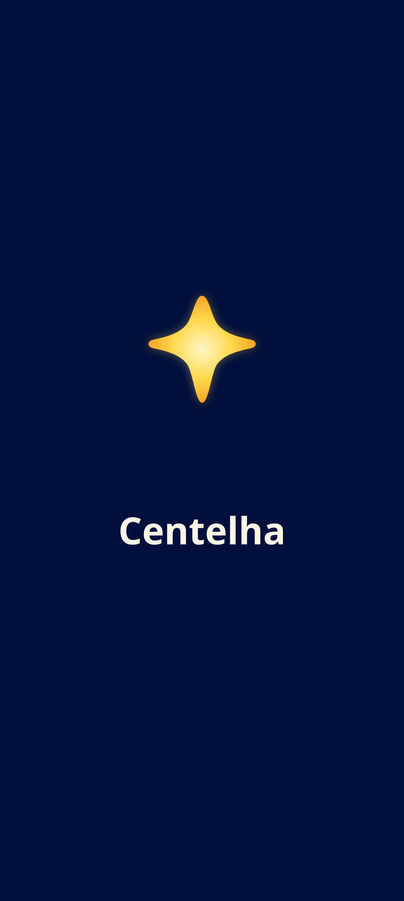
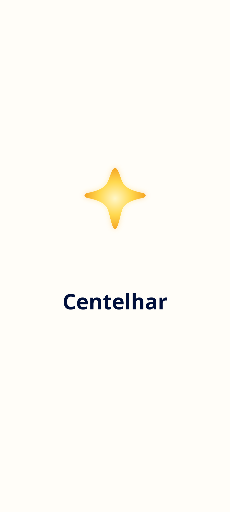
Mascote como extensão, não como logotipo
Relação com a marca
Clara “nasce” da mesma centelha: corpo luminoso dourado, arredondado e gentil. O parentesco deve ser percebido por cor, brilho e geometria — não pela substituição do símbolo oficial.
Regras de uso
Aparece: Centelha Kids, questionários, feedback de acerto, timer de sono e vídeos infantis. Não aparece: logo principal, ícone principal, telas adultas, comunicações institucionais formais ou como selo obrigatório.
Arquivos prontos
Design tokens
tokens/tokens.css inclui variáveis e prefers-color-scheme. tokens/tokens.json centraliza tokens de cor, tipografia, espaçamento e efeitos. centelha_theme.dart é um mapeamento inicial para Flutter.
Vetores
Logos, ícones de interface, patterns, app/adaptive icons, splash, mockups e templates sociais estão separados em SVG. Os masters de logo não contêm imagens raster.